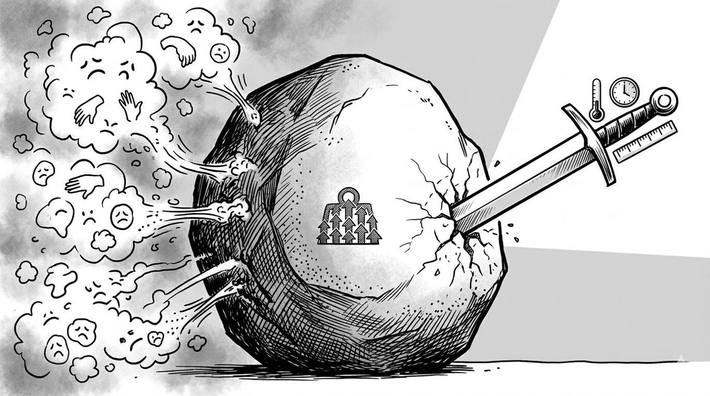

「それってあなたの感想ですよね」

どーもとーるです！
今回は、僕とビジネスの付き合いのある"スミレさん"のグループ勉強会で外部講座をさせていただきました‼
⇒ 店舗サポートを学びたい方はぜひ
今回は、そこでは時間の都合上や、やや脱線の部分からカットしたお話を少ししていこうと思います。
ではさっそく.....
「それってあなたの感想ですよね？」
某論破王の有名なセリフですが、これ、実はビジネスやコミュニケーションの本質を突きまくっている言葉なんです。
SNSでの発信や、商品の口コミ、日々の会話。
僕たちは常に「評価」にさらされています。でも、その「評価」の正体をちゃんと解剖できている人は驚くほど少ないんです。
今回は、あなたのストレスを劇的に減らし、さらに「選ばれるビジネス」を作るための、「認知的評価」と「感情的評価」という、ちょっとエグい脳の仕組みについてお話しします。
これがわかると、アンチコメントにビビることもなくなるし、逆にお客さんに「刺さる」口コミの集め方も手に取るようにわかるようになります。
評価の不一致というかみ合わない会話
まず、多くの人がやりがちな「会話のボタンの掛け違い」から見ていきましょう。
例えば、友人がこう言ったとします。
「私、魚って嫌いなんだよね」
これに対して、あなたは良かれと思ってこう返します。
「えー！でも魚にはDHAとかEPAとか豊富で、栄養価も高いし体にいいんだよ？」
はい、これ。会話のデッドボールです。
友人が言っているのは「感情的評価（好き嫌い）」。つまり、ただの「感想」です。
それに対して、あなたが返しているのは「認知的評価（いい悪い）」。つまり、「事実に基づく基準」です。
感情（心）で話している人に、論理（脳）で返しても、話は1ミリも噛み合わない。
それどころか、相手は「自分の感情を否定された」と感じて、心のシャッターをガラガラと閉めてしまいます。
ビジネスでも全く同じことが起きています。
お客さんが「なんかこれ、好きじゃないんだよね」と言っている時に、「いや、これは最新の技術を使っていて、性能的には最高なんです！」と機能説明（認知的評価）を始めるのは、最もやってはいけない悪手なんです。
「おいしくない」の1件が持つ二つの顔
では、ここからが口コミや評判の正体の話です。
SNSや食べログなどでよく見かける言葉を解剖してみましょう。
「まずい」「おいしくない」「うまい」「最高」
こうした言葉は、すべて「感情的評価 ＝ 好き嫌い」の話です。
味の好みは人によって全く違うので、こうした「感想」は、本来であれば1〜2件だけではほとんど影響しないと思っておいてください。
たとえばラーメン屋で、『この店、まずいよね』と言う人がいますよね。
これは実は、"味が濃いのが苦手"とか"自分の好みじゃない"という"感想（好き嫌い）"であることが多いんです。
一方で、評価というのは、『スープの温度が低い』『麺の茹で加減にムラがある』『提供まで20分かかっている』こういった基準に基づく判断が"評価"です。
つまり、たとえ「おいしくない」という1件の書き込みであっても、受け取る側によって解釈が分かれます。
ある人はそれを「店全体の評価」として深刻に捉えてしまうし、またある人は「本当にまずいのか？」という事実確認として捉え、実際に自分の舌で確かめに行こうとします。
数の暴力が「感想」を「強い傾向」に錯覚させる
でも、ここが脳のバグの面白い（怖い）ところ。
同じ「おいしくない」という感想が、5件、10件と複数集まってくると、話が完全に変わります。
人間には、「多数派が正しいと思い込む」という強力なバイアスがあります。
本来は個人の主観でしかないはずの「まずい」という言葉も、数が集まると、脳が勝手にこう認知し始めます。
「これだけ多くの件数のレビューがあるなら、それは個人の好みの問題ではなく、動かしようのない事実であり、この店がまずいという傾向が強いんじゃね？」
つまり、主観（感想）が"量"によって、あたかも客観的な"事実"や"評価"であるかのように見えてしまう。
これがSNS炎上や、風評被害の正体です。
一方で、感情（好き嫌い）とは無縁の、「認知的評価（いい悪い）」というものがあります。
これは、個人の感性ではなく、「基準や事実に基づく指摘」です。
例えば、飲食店でこんな指摘があったとします。
「スープの温度が低い（ぬるい）」「麺の茹で加減にムラがある」「注文してから提供まで20分以上かかった」
これらは、「好きか嫌いか」という感想じゃありませんよね。
「飲食店として、本来あるべき状態（基準）を満たしていない」という「事実」の報告です。
これが一般的に言われる"評価"と言われるものです。
こうした認知的評価は、たとえ1件であっても、見る側に強烈な影響を与えます。
なぜなら、これは「好み」の問題ではなく、その店や商品の「品質（状態）」の話だからです。
「まずい」と1回書かれていても、「まあ、人によるよね」で済みます。
でも、「スープがぬるかった」と1回書かれていたら、「あ、この店は調理の管理ができていないんだな」と、誰もが明確に「行くのをやめる理由」にしてしまうんです。
ここで、冒頭のあのセリフに戻りましょう。
「それって、あなたの感想ですよね」
ビジネスにおいて、あるいは自分への批判を受けたとき、この視点を持つことは最強の防御になります。
相手が言っているのは、「感情的評価（あなたのことが嫌い、このやり方は好きじゃない）」なのか。
それとも、「認知的評価（あなたの基準は間違っている、この事実に不備がある）」なのか。
もし相手が「あなたの発信、なんか鼻につくから嫌いです」と言ってきたら、こう返しましょう。
「あ、それってあなたの感想（好き嫌い）ですよね」
この場合、あなたが改善すべき点は1ミリもありません。
なぜなら、万人に好かれる「感情的評価」など存在しないからです。
あなたの感性と相手の感性が合わなかった、ただそれだけのこと。
しかし、もし相手が「あなたの言うこのデータ、出典が間違っていますよ」と言ってきたら、これは「認知的評価（事実）」です。
ここには速攻でメスを入れなければなりません。
ビジネスを伸ばす「口コミ」の扱い方
口コミを集めるとき、あるいは分析するときは、この2つの軸を明確に分けましょう。
- 感想（感情的評価）：少数では弱いが、数が集まると「事実としての傾向」として認識される。ファン作りの指標。
- 評価（認知的評価）：1件でも信頼を左右する。品質改善の指標。
実は、感情的なマイナス評価（「なんか嫌い」「合わない」）というのは、ビジネスの成約率にはそれほど悪影響を与えません。
なぜなら、それを見た人は「あ、自分は感性が違うから大丈夫かな」とスルーできるからです。
本当に怖いのは、認知的評価におけるマイナスです。
「事実と違う」「説明と中身が違う」「期限を守らない」。
これらは「感想」ではなく「事実」として、たった一人の一言が、あなたの数年間の積み上げを一瞬で破壊します。
逆に言えば、あなたがお客様からもらうべき最強の口コミは、「感情的な大好き（数）」と「認知的な凄さ（事実・1件の重み）」の両輪です。
情報の扱い方が変われば、ビジネスの質は劇的に変わります。
その批判は「感想」か、それとも「評価」か。
常にこのフィルターを通す習慣をつけてみてください。
とーる｜行動経済アナリスト